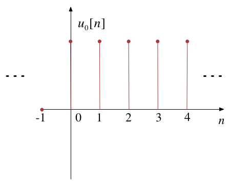
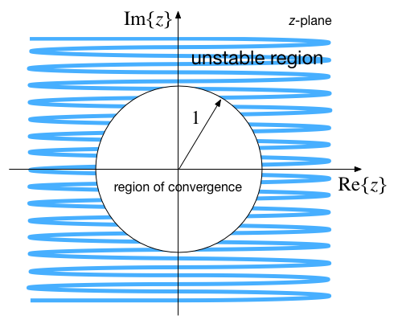

Unit 5.2: Discrete-Time Systems and the Z-Transform#
Colophon#
The source code for this page is dt_systems/2/z_transform.ipynb.
You can view the notes for this presentation as a webpage (HTML).
This page is downloadable as a PDF file.
Scope and Background Reading#
This session introduces the z-transform which is used in the analysis of discrete time systems. As for the Fourier and Laplace transforms, we present the definition, define the properties and give some applications of the use of the z-transform in the analysis of signals that are represented as sequences and systems represented by difference equations.
The material in this presentation and notes is based on Chapter 9 of [Karris, 2012] from the Required Reading List. Additional coverage is to be found in Chapter 13 of [Boulet, 2006] from the Recommended Reading List.
Agenda#
Introduction
The Z-Transform
Properties of the Z-Transform
Some Selected Z-Transforms
Relationship between Laplace and Z-Transform
Stability Regions
Introduction#

In the remainder of this course we turn our attention to how we model and analyse the behaviour of the central block in this picture.
Nature of the signals#

The signals we process in discrete time systems are sequences of values \(x[n]\) where \(n\) is an index.
A sequence can be obtained in real-time, e.g. as the output of a ADC, or can be stored in digital memory; processed and re-stored; or processed and output in real-time, for example in digital music.
Nature of the systems#
The input to a discrete time system is a squence of values \(x[n]\)
The output is also a sequence \(y[n]\)
The block represents the operations that convert \(x[n]\) into \(y[n]\).
This processing takes the form of a difference equation
This is analogous to the representation of continuous-time operations by differential equations.
Transfer function model of a DT system#
In CT systems we use the Laplace transform to simplify the analysis of the differential equations
In DT systems the z-Transform allows us to simplify the analysis of the difference equations
In CT systems application of the Laplace transform allows us to represent systems as transfer functions and solve convolution problems by multiplication
The z-transform provides analogous tools for the analysis of DT systems.
The Z-Transform#
Sampling and the Z-Transform#
In the last lecture we showed that sampling could be represented as the multiplication of a CT signal by a periodic train of impulses:
By the sampling property of \(\delta(t)\)
Using the Laplace transform pairs \(\delta(t) \Leftrightarrow 1\) and \(\delta(t-T) \Leftrightarrow e^{-sT}\) we obtain:
By substitution of \(z = e^{sT_s}\) and representing samples \(x(nT_s)\) as sequence \(x[n]\):
Properties of the z-Transform#
|
Property |
Discrete Time Domain |
\(\displaystyle{\mathcal{Z}}\) Transform |
|---|---|---|---|
1 |
Linearity |
\(\displaystyle{af_1[n]+bf_2[n]+\cdots}\) |
\(\displaystyle{aF_1(z)+bF_2(z)+\cdots}\) |
2 |
Shift of \(\displaystyle{x[n]u_0[n]}\) |
\(\displaystyle{f[n-m]u_0[n-m]}\) |
\(\displaystyle{z^{-m}F(z)}\) |
3 |
Left shift |
\(\displaystyle{f[n-m]}\) |
\(\displaystyle{z^{-m}F(z)+\sum_{n=0}^{m-1}f[n-m]z^{-n}}\) |
4 |
Right shift |
\(\displaystyle{f[n+m]}\) |
\(\displaystyle{z^{m}F(z)+\sum_{n=-m}^{-1}f[n+m]z^{-n}}\) |
5 |
Multiplication by \(\displaystyle{a^n}\) |
\(\displaystyle{a^nf[n]}\) |
\(\displaystyle{F\left(\frac{z}{a}\right)}\) |
6 |
Multiplication by \(\displaystyle{e^{-nsT_s}}\) |
\(\displaystyle{e^{-nsT_s}f[n]}\) |
\(\displaystyle{F\left(e^{sT_s}z\right)}\) |
7 |
Multiplication by \(\displaystyle{n}\) |
\(\displaystyle{nf[n]}\) |
\(\displaystyle{-z\frac{d}{dz}F(z)}\) |
8 |
Multiplication by \(\displaystyle{n^2}\) |
\(\displaystyle{n^2f[n]}\) |
\(\displaystyle{-z\frac{d}{dz}F(z)+z^2\frac{d^2}{dz^2}F(z)}\) |
9 |
Summation in time |
\(\displaystyle{\sum_{m=0}^{n}f[m]}\) |
\(\displaystyle{\frac{z}{z-1}F(z)}\) |
10 |
Time convolution |
\(\displaystyle{f_1[n]*f_2[n]}\) |
\(\displaystyle{F_1(z)F_2(z)}\) |
11 |
Frequency convolution |
\(\displaystyle{f_1[n]f_2[n]}\) |
\(\displaystyle{\frac{1}{j2\pi }\oint {x{F_1}(v){F_2}\left( {\frac{z}{v}} \right)} {v^{ - 1}}dv}\) |
12 |
Initial value theorem |
\(\displaystyle{f[0]=\lim_{z\to\infty}F(z)}\) |
|
13 |
Final value theorem |
\(\displaystyle{\lim_{n\to\infty}f[n]=\lim_{z\to 1}(z-1)F(z)}\) |
For proofs refer to Section 9.2 of [Karris, 2012].
Some Selected Common z-Transforms#
The Geometric Sequence#
After some analysis1, this can be shown to have a closed-form expression2
Notes
See Karris pp 9-12—9-13[Karris, 2012] for the details.
This function converges only if
\(\displaystyle{|z| < |a|}\)
and the region of convergence is outside the circle centred at \(z=0\) with radius
\(\displaystyle{r=|a|}\).
Region of convergence#

The Delta Sequence#
The Unit Step#

Z-Transform of Unit Step#
This is a special case of the geometric sequence with \(a = 1\) so
Region of convergence is
Exponential Decay Sequence#
This is a geometric sequence with \(a = e^{-aT_s}\), so
Region of convergence is $\(|e^{-aT_s}z^{-1}| < 1\)$
Ramp Function#
We recognize this as a signal \(u_0[n]\) multiplied by \(n\) for which we have the property $\(nf[n] \Leftrightarrow -z\frac{d}{dz}F(z)\)$
After applying the property and some manipulation, we arrive at:
z-Transform Tables#
As usual, we can rely on this and similar analysis to have been tabulated for us and in practice we can rely on tables of transform pairs, such as this one.
|
f[n] |
F(z). |
Region of Convergence |
|---|---|---|---|
1. |
\(\displaystyle{\delta[n]}\) |
\(\displaystyle{1}\) |
|
2 |
\(\displaystyle{\delta[n-m]}\) |
\(\displaystyle{z^{-m}}\) |
|
3 |
\(\displaystyle{a^nu_0[n]}\) |
\(\displaystyle{\frac{z}{z-a}}\) |
\(\mid z \mid > a\) |
4 |
\(\displaystyle{u_0[n]}\) |
\(\displaystyle{\frac{z}{z-1}}\) |
\(\mid z \mid > 1\) |
5 |
\(\displaystyle{(e^{-anT_s})u_0[n]}\) |
\(\displaystyle{\frac{z}{z-e^{-aT_s}}}\) |
\(\displaystyle{\mid e^{-aT_s}z^{-1} \mid < 1}\) |
6 |
\(\displaystyle{(\cos naT_s)u_0[n]}\) |
\(\displaystyle{\frac{z^2 - z\cos aT_s}{z^2 -2z\cos aT_s + 1}}\) |
\({ \mid z \mid> 1}\) |
7 |
\(\displaystyle{(\sin naT_s)u_0[n]}\) |
\(\displaystyle{\frac{z\sin aT_s}{z^2 -2z\cos aT_s + 1}}\) |
\({\mid z \mid > 1}\) |
8 |
\(\displaystyle{(a^n\cos naT_s)u_0[n]}\) |
\(\displaystyle{\frac{z^2 - az\cos aT_s}{z^2 -2az\cos aT_s + a^2}}\) |
\({\mid z \mid > 1}\) |
9 |
\(\displaystyle{(a^n\sin naT_s)u_0[n]}\) |
\(\displaystyle{\frac{az\sin aT_s}{z^2 -2az\cos aT_s + a^2}}\) |
\({\mid z \mid > 1}\) |
10 |
\(\displaystyle{u_0[n]-u_0[n-m]}\) |
\(\displaystyle{\frac{z^m-1}{z^{m-1}(z-1)}}\) |
|
11 |
\(\displaystyle{nu_0[n]}\) |
\(\displaystyle{\frac{z}{(z-1)^2}}\) |
|
12 |
\(\displaystyle{n^2u_0[n]}\) |
\(\displaystyle{\frac{z(z+1)}{(z-1)^3}}\) |
|
13 |
\(\displaystyle{[n+1]u_0[n]}\) |
\(\displaystyle{\frac{z^2}{(z-1)^2}}\) |
|
14 |
\(\displaystyle{a^n n u_0[n]}\) |
\(\displaystyle{\frac{az}{(z-a)^2}}\) |
|
15 |
\(\displaystyle{a^n n^2 u_0[n]}\) |
\(\displaystyle{\frac{az(z+a)}{(z-a)^3}}\) |
|
16 |
\(\displaystyle{a^n n[n+1] u_0[n]}\) |
\(\displaystyle{\frac{2az^2}{(z-a)^3}}\) |
Relationship Between the Laplace and Z-Transform#
Given that we can represent a sampled signal in the complex frequency domain as the infinite sum of each sequence value delayed by an integer multiple of the sampling time:
And by definition, the z-transform of such a sequence is:
It follows that
And
Mapping of s to z#
Since \(s\) and \(z\) are both complex variables, \(z=e^{sT_s}\) is a mapping from the \(s\)-domain to the \(z\)-domain and \(z = (\ln z)/T_s\) is a mapping from the \(z\) to \(s\)-domain.

Now, since
where
and
Introduction of sampling frequency#
Now, since \(T_s = 1/f_s\) then \(\omega_s = 2\pi/f_s\) or \(f_s = \omega_s/(2\pi)\) and \(T_s = 2\pi/\omega_s\)
We let
Hence by substitution:
Interpretation of the mapping s to z#
The quantity \(e^{j2\pi\omega/\omega_s}\) defines a unit-circle in the \(z\)-plane centred at the origin.
And of course the term \(\sigma\) represents the (stability) boundary between the left- and right-half planes of the \(s\)-plane.
What are the consequences of this?
Case I: \(\sigma < 0\)#
When \(\sigma < 0\) we see that from
\[|z| = e^{\sigma T_s}\]that
\[|z| < 1\]The left-half plane of the \(s\)-domain maps into the unit circle in the \(z\)-plane.
Different negative values of \(\sigma\) map onto concentric circles with radius less than unity.
Case II: \(\sigma > 0\)#
When \(\sigma > 0\) we see that from
\[|z| = e^{\sigma T_s}\]that
\[|z| > 1\]The right-half plane of the \(s\)-domain maps outside the unit circle in the \(z\)-plane.
Different positive values of \(\sigma\) map onto concentric circles with radius greater than unity.
Case III: \(\sigma = 0\)#
When \(\sigma = 0\),
\[|z| = 1\]and
\[\theta = \frac{2\pi\omega}{\omega_s}\]All values of \(\omega\) lie on the circumference of the unit circle.
Stability Region - s-Plane#
Stability Region - z-Plane#

Frequencies in the z-Domain#
As a consequence of the result for Case III above, we can explore how frequencies (that is is values of \(s=\pm j\omega\)) map onto the \(z\)-plane.
We already know that these frequencies will map onto the unit circle and by \(\theta = 2\pi\omega/\omega_s\) the angles are related to the sampling frequency.
Let’s see how
Mapping of multiples of sampling frequency#
\(\omega\) [radians/sec] |
\(\mid z\mid \) |
\(\theta\) [radians] |
|---|---|---|
0 |
1 |
0 |
\(\omega_s/8\) |
1 |
\(\pi/4\) |
\(\omega_s/4\) |
1 |
\(\pi/2\) |
\(3\omega_s/8\) |
1 |
\(3\pi/4\) |
\(\omega_s/2\) |
1 |
\(\pi\) |
\(5\omega_s/8\) |
1 |
\(5\pi/4\) |
\(3\omega_s/4\) |
1 |
\(3\pi/2\) |
\(7\omega_s/8\) |
1 |
\(7\pi/4\) |
\(\omega_s\) |
1 |
\(2\pi\) |
Mapping of s-plane to z-plane#

Mapping z-plane to s-plane#
There is no unique mapping of \(z\) to \(s\) since
but for a complex variable
This is in agreement with the theoretical idea that in the frequency domain, sampling creates an infinite number of spectra, each of which is centred around \(\pm n\omega_s\).
Frequency aliasing#
It’s worth observing that any stable complex pole in the \(s\)-plane \(s=-\sigma + j\omega\) will have complex conjugate pair \(s = -\sigma - j\omega\).
Providing \(\omega < \omega_s/2\) these poles will be mapped to the upper and lower half-plane of the \(z\)-plane respectively.
If \(\omega > \omega_s/2\), an upper-half plane pole will be mapped to the lower-half plane and will have an effective frequency of \(\omega_s/2 - \omega\).
Similarly, its conjugate pair will move into the upper-half plane.
This is another way of looking at aliasing.
Also, any poles with frequency \(\omega > \omega_s\) will also be aliased back into into the unit circle.
Summary#
Introduction
The Z-Transform
Properties of the Z-Transform
Some Selected Z-Transforms
Relationship Between Laplace and Z-Transform
Stability Regions
Next session
The Inverse Z-Transform – an examples class
Homework#
Problems 1 to 3 in Section 9.10 Exercises of [Karris, 2012] explore the z-Transform
References#
See Bibliography.